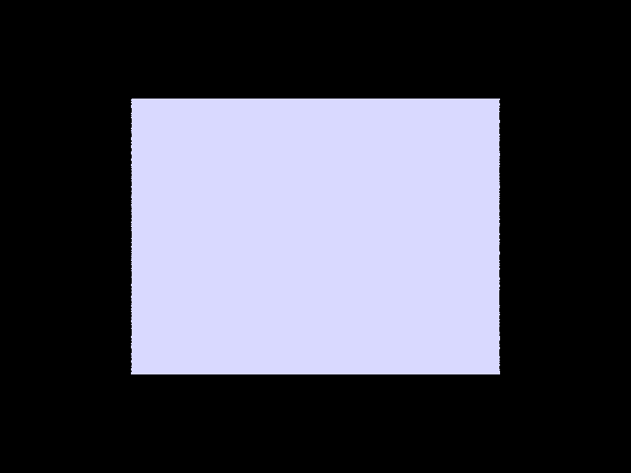

CS184/284A Spring 2025 Homework 3 Write-Up
Link to webpage: https://cal-cs184-student.github.io/hw-webpagescappu/hw2/index.html Link to GitHub repository: https://github.com/cal-cs184-student/sp25-hw3-eason

Overview
In this assignment, I have struggled wirh ray tracing. Part 1 and Part 2 were dealing with the basics of ray tracing, intersection and bounding volume hierarchy. Begining from Part 3, I strated to deal with the actual path tracing sampling process. The direct illumination was implemented by Part 3. While the indirect illumination, or "at least one bounce estimation", was implemented by Part 4. Part 5 introduced the adaptive sampling process, giving the path tracing a way to converge to the "correct result" according to the z-distribution.Part 1: Ray Generation and Scene Intersection
Ray Generation
In the ray generation process, we create samplerays from the camera for each pixel in the image.
In Camera::generate_ray(...) function, we deal with how pixel coordinates is transformed to the ray's origin and direction. For each pixel (i,j), we:
- Calculate the normalized device coordinates (NDC) using the pixel coordinates
- Transform these coordinates to screen space using the camera's field of view and aspect ratio
- Create a ray with origin at the camera position and direction pointing through the calculated screen point
In PathTracer::raytrace_pixel(...) function, we use a loop to generate random ray samples for each pixel and tracing them through the PathTracer::est_radiance_global_illumination(...) function. (which is the function implemented in Part 3 & 4)
Triangle Intersection Algorithm
The Moller-Trumbore algorithm provides an efficient way to compute ray-triangle intersections. The core idea is to solve for both the intersection point and barycentric coordinates simultaneously.
Basic Equation
For a ray \( \vec{O} + t\vec{D} \) and a triangle with vertices \( \vec{P_0}, \vec{P_1}, \vec{P_2} \), the intersection point can be expressed using barycentric coordinates \( b_1, b_2 \):
\[ \vec{O} + t\vec{D} = (1-b_1-b_2)\vec{P_0} + b_1\vec{P_1} + b_2\vec{P_2} \]
Solution
The algorithm solves for \( [t, b_1, b_2] \) using:
\[ \begin{bmatrix} t \\ b_1 \\ b_2 \end{bmatrix} = \frac{1}{\vec{S_1} \cdot \vec{E_1}} \begin{bmatrix} \vec{S_2} \cdot \vec{E_2} \\ \vec{S_1} \cdot \vec{S} \\ \vec{S_2} \cdot \vec{D} \end{bmatrix} \]
Where:
- \( \vec{E_1} = \vec{P_1} - \vec{P_0} \)
- \( \vec{E_2} = \vec{P_2} - \vec{P_0} \)
- \( \vec{S} = \vec{O} - \vec{P_0} \)
- \( \vec{S_1} = \vec{D} \times \vec{E_2} \)
- \( \vec{S_2} = \vec{S} \times \vec{E_1} \)
Intersection Conditions
An intersection is valid when all of these conditions are met:
- \( t \) is within the ray's \( [min_t, max_t] \) bounds
- \( b_1 \geq 0 \) and \( b_2 \geq 0 \)
- \( b_1 + b_2 \leq 1 \)
Computational Efficiency
According to the slide, the algorithm's computational cost is:
- 1 division
- 27 multiplications
- 17 additions/subtractions
This makes it one of the most efficient ray-triangle intersection algorithms, requiring minimal vector operations while maintaining numerical stability.
Sphere Intersection Algorithm
The sphere intersection algorithm solves for the intersection between a ray and a sphere using quadratic equations.
Mathematical Setup
Given:
- Ray equation: \( \mathbf{r}(t) = \mathbf{o} + t\mathbf{d}, \quad 0 \leq t < \infty \)
- Sphere equation: \( (\mathbf{p} - \mathbf{c})^2 - R^2 = 0 \)
- Where:
- \( \mathbf{o} \) is the ray origin
- \( \mathbf{d} \) is the ray direction
- \( \mathbf{c} \) is the sphere center
- \( R \) is the sphere radius
Solution Process
Substituting the ray equation into the sphere equation:
\[ (\mathbf{o} + t\mathbf{d} - \mathbf{c})^2 - R^2 = 0 \]
This expands to a quadratic equation:
\[ at^2 + bt + c = 0 \]
Where:
- \( a = \mathbf{d} \cdot \mathbf{d} \)
- \( b = 2(\mathbf{o} - \mathbf{c}) \cdot \mathbf{d} \)
- \( c = (\mathbf{o} - \mathbf{c}) \cdot (\mathbf{o} - \mathbf{c}) - R^2 \)
Finding Intersection Points
The solution is given by the quadratic formula:
\[ t = \frac{-b \pm \sqrt{b^2 - 4ac}}{2a} \]
Intersection Cases
The discriminant \( b^2 - 4ac \) determines the number of intersections:
- If \( b^2 - 4ac < 0 \): No intersection
- If \( b^2 - 4ac = 0 \): One intersection (ray tangent to sphere)
- If \( b^2 - 4ac > 0 \): Two intersections (ray passes through sphere)
For valid intersections, we need:
- The smallest positive t value within [min_t, max_t]
- If both t values are negative, there is no valid intersection
Part 1 Rendering Results
Below are some rendering results from simple DAE scenes demonstrating ray intersection with different primitives with normal shading:

|
|

|

|
Part 2: Bounding Volume Hierarchy
In this part, I implemented a Bounding Volume Hierarchy (BVH) to accelerate ray intersection tests. The BVH construction algorithm uses the Surface Area Heuristic (SAH) to optimize the tree structure. The construction process truned out to be very fast, but the constucted result is not that good comparing to the bvh tree that calculated and sortedall possible partition points.
BVH Construction Algorithm
The algorithm follows these steps:
- For a given set of primitives:
- Calculate the bounding box containing all primitives
- If the number of primitives is less than max_leaf_size, create a leaf node
- Otherwise, split the node and recurse
- For splitting a node:
- Consider splits along all three axes (x, y, z)
- For each axis, compute potential split at the centroid's coordinate
- Calculate the SAH cost for each split
- Choose the axis with minimum SAH cost
Surface Area Heuristic (SAH)
The SAH cost for a split is calculated as:
\[ Cost = \frac{SA(L) \cdot N_L + SA(R) \cdot N_R}{SA(P)} \]
Where:
- \( SA(L), SA(R) \) are the surface areas of left and right child nodes
- \( N_L, N_R \) are the number of primitives in left and right children
- \( SA(P) \) is the surface area of the parent node
Splitting Implementation
For the chosen best axis:
- Partition primitives based on their centroid's coordinate compared to the split point
- Use a two-pointer approach to efficiently partition the primitives:
- Move left pointer right until finding a primitive that belongs on the right
- Move right pointer left until finding a primitive that belongs on the left
- Swap primitives when both pointers find candidates
- If the split results in all primitives on one side, force a median split
Optimization Considerations
- The SAH cost function helps balance between:
- Creating compact bounding volumes (spatial efficiency)
- Evenly distributing primitives (traversal efficiency)
- The median fallback ensures we don't create degenerate trees
- Using centroids for splitting decisions helps create more balanced trees
Part 2 Rendering Results
Below are some rendering results from complex DAE scenes benefitted by the efficiency bump with BVH trees:
|
|
|

|
Part 2 Speed Comparison
The following results are rendered from a raspberry pi 5 with 16GB RAM and quad-core CPU. The time is dramatically reduced from above 30 seconds to 5 seconds, while each ray intersection ops are 8 times less. The speed of bch construction is pretty fast as we said at the beginning of this part, yet there is a trade-off between the quality of the tree and the speed of construction.

|
|
Part 3: Direct Illumination
In this part, I implemented two different methods for estimating direct illumination: hemisphere sampling and importance sampling. Both methods aim to calculate the direct lighting contribution at an intersection point, but they differ in their sampling strategies.
Hemisphere Sampling
The hemisphere sampling approach (estimate_direct_lighting_hemisphere) works as follows:
- Setup:
- Create a coordinate system at the intersection point with normal N aligned to Z-axis
- Transform the outgoing direction (towards camera) to this local space
- Use total samples = number of lights × samples per light
- For each sample:
- Sample a random direction in the hemisphere using BSDF
- Transform the sampled direction to world space
- Cast a ray in this direction to find potential light sources
- If we hit something, compute the radiance contribution using the rendering equation: \[ L_o = f_r(w_i, w_o) * L_i * cos\theta_i / (pdf * N_{samples}) \]
Importance Sampling
The importance sampling method (estimate_direct_lighting_importance) is more efficient as it samples lights directly:
- Setup is similar to hemisphere sampling
- For each light source:
- Handle delta lights (point lights) differently from area lights:
- For delta lights: single sample with no division by number of samples
- For area lights: multiple samples with proper weight
- For each sample:
- Sample a point on the light source
- Check if the sampled direction is below the surface
- Cast shadow ray to check visibility
- If visible, compute contribution using: \[ L_o = f_r(w_i, w_o) * L_i * cos\theta_i / (pdf * N_{samples}) \]
- Handle delta lights (point lights) differently from area lights:
Key Differences
- Sampling Strategy:
- Hemisphere: Samples directions uniformly in hemisphere
- Importance: Samples directly on light sources
- Efficiency:
- Hemisphere: Many samples might not hit any light source
- Importance: All samples contribute to lighting (if not occluded)
- Visual Differences:
- Hemisphere: More noise, uniform "glow" around lights
- Importance: Less noise, better captures light directionality
Implementation Details
Both implementations handle:
- Coordinate space transformations between world and local space
- Proper PDF calculations for correct weighting
- Shadow ray tests for visibility checking
- BSDF evaluation for material response
- Cosine term for Lambert's law
Rendered Results & Comparison
The following pictures showed the results of hemisphere sampling and importance sampling with 4 samples per pixel. You can see the effectiveness of importance sampling in reducing noise and the overall performance of importance sampling is better than hemisphere sampling.
|
|
|
Part 4: Global Illumination
In this part, I implemented global illumination by extending the direct lighting to include indirect bounces. The implementation uses Russian Roulette for path termination and recursive ray tracing for bounce computation.
Global Illumination Implementation
The global illumination is implemented in two main functions:
est_radiance_global_illumination: The main entry point that combines:- Zero bounce radiance (emission)
- At least one bounce radiance (direct + indirect)
at_least_one_bounce_radiance: Handles both direct and indirect illumination
Indirect Illumination Algorithm
The at_least_one_bounce_radiance function implements the following strategy:
Setup Phase
- Create a coordinate system at the intersection point:
- Transform from object space to world space (o2w)
- Calculate its transpose for world to object space (w2o)
- Calculate hit point and outgoing direction in local coordinates
Path Termination
Use Russian Roulette for path termination:
- Continuation probability: 0.4 (40%)
- Terminate if:
- Random number > 0.4, OR
- Maximum ray depth reached
Bounce Computation
For each continuing path:
- Sample new direction using BSDF:
- Get new direction (w_in)
- Get probability density (pdf)
- Get BSDF value (sample_f)
- Create and trace bounce ray:
- Transform direction to world space
- Increment ray depth
- Set minimum distance to avoid self-intersection
- If intersection occurs, compute contribution:
\[ L_{indirect} = f_r(w_i, w_o) * L_{bounce} * cos\theta_i / (pdf * p_{RR}) \]
Where:
- \( f_r \) is the BSDF value
- \( L_{bounce} \) is the radiance from the bounce
- \( cos\theta_i \) is the cosine term
- \( p_{RR} = 0.4 \) is the Russian Roulette probability
Result
|
|
Key Features
- Path Termination:
- Uses Russian Roulette for unbiased path termination
- Balances computation cost with accuracy
- Recursive Structure:
- Each bounce can spawn further bounces
- Naturally handles multiple-bounce illumination
- Energy Conservation:
- Properly weights contributions by PDF and Russian Roulette probability
- Maintains physical correctness of light transport
Part 5: Adaptive Sampling
In this part, I implemented adaptive sampling to improve rendering efficiency. The core idea of adaptive sampling is to dynamically adjust the number of samples based on pixel variance, increasing samples in noisy areas and stopping early in well-converged regions.
Adaptive Sampling Algorithm
The algorithm follows these steps:
- Initial Setup:
- samplesPerBatch: Controls the frequency of convergence checks
- maxTolerance: Determines the convergence threshold
- Tracking variables:
- s1: Sum of sample luminances
- s2: Sum of squared sample luminances
- sampled_num: Current number of samples
- Sampling Process:
- Sample each pixel until one of these conditions is met:
- Reach maximum sample count
- Meet convergence criteria
- Update statistics after each sample:
- Accumulate sample contribution
- Update s1 and s2
- Sample each pixel until one of these conditions is met:
- Convergence Check:
- Check every samplesPerBatch samples
- Calculate confidence interval using:
\[ I = \frac{1.96\sigma}{\sqrt{n}} \leq \mu \cdot maxTolerance \]
Where:
- \(\sigma\) is standard deviation: \(\sqrt{\frac{s_2 - s_1^2/n}{n-1}}\)
- \(\mu\) is mean: \(s_1/n\)
- \(n\) is current sample count
Implementation Details
In the code implementation:
- Use 95% confidence interval (1.96 standard deviations)
- Record actual sample count per pixel in sampleCountBuffer
- Compute mean and variance dynamically to avoid storing all samples
- Use online update formulas to minimize memory usage
Rendering Result
|
|
|